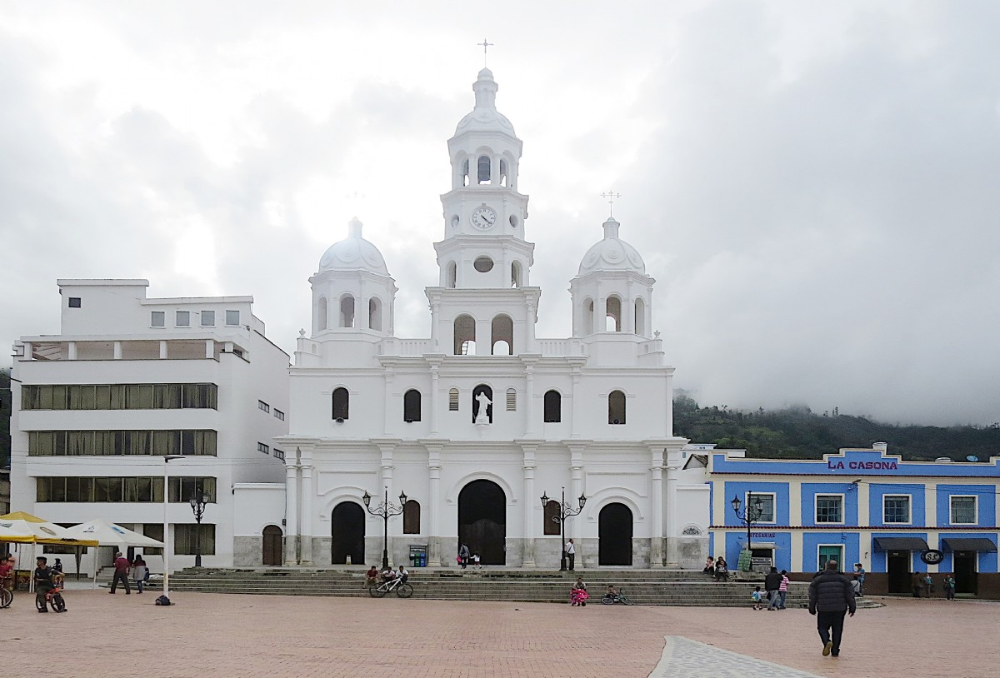

Málaga es el corazón de la provincia de García Rovira, rica en historia y cultura.
Es un municipio colombiano, capital de la provincia de García Rovira ubicada al sur oriente del departamento de Santander sobre la Troncal Central del Norte y a 124 km de distancia de Bucaramanga.
Se encuentran tres variedades de climas: páramo, templado y cálido.
Elevación: 2.235 m Alcalde: Rubén Darío Moreno Méndez (2024-2027) Gentilicio: Malagueño, -a
Parque Principal de Málaga
El Parque Principal de Málaga es el punto de encuentro por excelencia para los habitantes del municipio.
Rodeado de arquitectura colonial, tiendas, iglesias y sitios culturales, este parque es un espacio lleno de historia y vida comunitaria.
Es un lugar ideal para caminar, descansar, disfrutar de la gastronomía local y participar en eventos públicos.
Catedral de la Inmaculada Concepción

La Catedral de la Inmaculada Concepción es uno de los principales íconos religiosos y arquitectónicos de Málaga, Santander.
Con un estilo neogótico, esta catedral es un lugar de encuentro espiritual, historia y tradición para los malagueños.
Se encuentra ubicada frente al Parque Principal y es el escenario de celebraciones religiosas importantes.
Estatua Simbólica
Una figura icónica que representa el espíritu del municipio.
En Málaga, Santander, la estatua más destacada es la del Prócer Custodio García Rovira, un reconocido líder de la independencia colombiana.
Esta estatua se encuentra ubicada en el municipio de Málaga, que es la capital de la provincia de García Rovira en el departamento de Santander.
Custodio García Rovira fue un abogado, gobernador y miembro del Triunvirato Presidencial del Gobierno del Congreso de las Provincias Unidas,
además de presidente de la república. Fue fusilado en 1816. La estatua en su honor es un monumento importante en la ciudad de Málaga y un símbolo de su legado histórico.
Rosario de Málaga
Tradición religiosa vivida por generaciones en procesiones comunitarias.
Monumento Histórico
Conmemoración de los eventos que marcaron a Málaga.
Hospital Local
Un centro de salud moderno y accesible para todos los habitantes.
Templo San Antonio
Uno de los templos más antiguos de la región, dedicado a San Antonio.
Sagrado Corazón
Escultura religiosa en lo alto del municipio, símbolo de fe y guía.
Alcaldía Municipal
Centro administrativo y punto de encuentro para gestiones oficiales.
Aeropuerto Regional
Entrada aérea que conecta Málaga con otras regiones del país.
Terminal de Cotrans
Facilita el transporte intermunicipal y el flujo turístico.